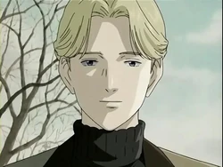

Johan LiebertJohan Liebert es un personaje de la serie de manga Monster, de Naoki Urasawa. Es el antagonista final y eje Johan es un verdadero misterio, su personalidad a simple vista es de un joven educado y cortés con los demás, eso causa que gane la confianza de la gente a su alrededor, sin embargo sus acciones y forma de pensar dicen otra cosa, es enormemente inteligente y es calculador y manipulador, a pesar que tiene un carácter muy tranquilo e indiferente, disfruta generar caos a su alrededor, y considera de poco valor la vida en si, según él, los que sobreviven son elegidos para trae el caos en el mundo. A pesar de su traumante personalidad e indiferencia, demuestra algo de sentimientos hacia su hermana gemela Anna Liebert, sin embargo hemos de notar que incluso quiso deshacerse de ella para borrar su rastro y su pasado. El nacimiento de Johan y su hermana Anna Liebert, son producto de un experimento encabezado por Franz Bonaparta, el experimento trataba de crear y mejorar a la raza humana, juntando a personas con niveles intelectuales muy elevados y que tuvieran hijos, para enseñarles, adiestrarles y llevar a la raza humana a otro concepto de revolución y organización. Sin embargo cuando la madre de Johan y Anna se entero de dicho proyecto por parte de su pareja(el padre de johan que era un soldado de alto rango), estos trataron de huir del país, sin exito. El padre de Johan fue ejecutado, mientras que su madre aún estando embarazada de los gemelos fue llevada en custodia. |  |
| ____________________________ |